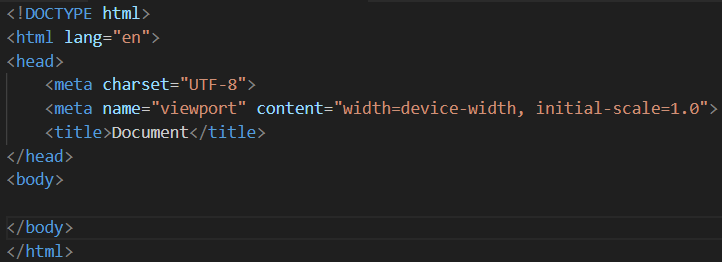

APUNTES: LENGUAJE DE MARCAS
ÍNDICE
Github: Creación, modificación e importación de un repositorio
Primer paso: Iniciar sesión o registrarse en github a través del siguiente enlace: Github

Segundo paso: En la esquina superior derecha, hacer clic en tu foto de perfil y acceder al apartado "Your repositories".

Tercer paso: Una vez accedemos al apartado de nuestros repositorios, seleccionaremos la opción "new" para crear uno nuevo.

Cuarto paso: Aquí podremos configurar la creación de un nuevo repositorio, como su nombre, estado de publicación, etc.

Quinto paso: Instalaremos la herramienta GIT

Sexto paso: Para clonar nuestro repositorio, tendremos que acceder a este, clicar en "Code" y copiar la url. Una vez hecho esto, abriremos el CMD y accederemos a la ruta donde queremos que esté guardado. Si ya tenemos git instalado, utilizaremos la función "git clone" con la url del repositorio para poder clonarlo de forma local.

Séptimo paso: Para poder inicializarlo, tendremos que ejecutar la orden "git init" dentro de la carpeta donde queramos que se ejecute el repositorio.
Comandos git
git init: Comando de inicialización de repositorios GIT en la ubicación actual.
git add: Comando de adición de elementos que van a incluirse en la nueva versión de los archivos del repositorio.
git commit -m "": Comando para empaquetar archivos con un mensaje.
git push origin main: Comando de sincronización de elementos con la rama.
Markdown: Etiquetas básicas
Encabezados
H1: #
H2: ##
H3: ###
H4: ####
H5: #####
H6: ######
Estilos de letra
Cursiva: *texto o _texto_
Negrita: **texto** o __texto__
Listas
Ordenadas: Etiqueta ol. Los elementos de forma numérica.
Desordenadas: Etiqueta ul. Los elementos se forma de forma desordenada con puntos.
Párrafos
Para crear un nuevo bloque de texto, se introduce una línea en blanco.
Enlaces
[Link](*enlace*)/"Título opcional del enlace"
Imágenes
inline-style: 
Tablas
Las barras verticales (|) separan las columnas, el encabezado puede usarse para alinear el texto a la izquierda(:---), al centro (:...:) y a la derecha (---:)
HTML: Características, estructura y etiquetas
Características
HTML no es un lenguaje de programación, es un lenguaje de marcado que define la estructura de su contenido. HTML consiste en una serie de elementos que se usan para encerrar diferentes partes del contenido para que se vean o comporten de una determinada manera.
Esto implica que la información a mostrar debe ir en forma de etiqueta para formar elementos que el navegador web sepa interpretar de qué tipo de información se trata y como tal sepa como representarlos.
Las partes principales de un elemento son:
La etiqueta de apertura:Consiste en el nombre del elemento (en este caso, p), encerrado por paréntesis angulares (< >) de apertura y cierre. Establece dónde comienza o empieza a tener efecto el elemento —en este caso, dónde es el comienzo del párrafo-.
La etiqueta de cierre: es igual que la etiqueta de apertura, excepto que incluye una barra de cierre (/) antes del nombre de la etiqueta. Establece dónde termina el elemento —en este caso dónde termina el párrafo—.
El contenido: este es el contenido del elemento, que en este caso es sólo texto.
El elemento: la etiqueta de apertura, más la etiqueta de cierre, más el contenido equivale al elemento.
Los atributos siempre se incluyen en la etiqueta de apertura de un elemento y deben tener siempre:
Un espacio entre este y el nombre del elemento (o del atributo previo, si el elemento ya posee uno o más atributos).
El nombre del atributo, seguido por un signo de igual (=).
Comillas de apertura y de cierre, encerrando el valor del atributo.
También se pueden colocar elementos dentro de otros elementos. A eso, se le llama anidamiento.
Estructura
La estructura de un documento HTML se ve así:

DOCTYPE: Especifica el tipo de documento
html: Elemento html que encierra todo el contenido de la página
Head: Actúa como un contenedor de todo lo que se quiera incluir en la página HTML. El contenido no es visible para los que visitan la página. Incluye cosas como palabras clave, descripción de la página, título de la página, icono, etc.
Body:Encierra el contenido de la página, ya sea texto, imágenes, vídeos, etc.
Etiquetas HTML
Encabezados:Etiquetas de h1 a h6, permiten especificar que ciertas partes del contenido son encabezados o subencabezados
Párrafos:Se utilizan párrafos de texto, entendiéndolo como un conjunto de frases relacionadas entre sí.
Listas ordenadas:Las listas ordenadas son aquellas en la cual el orden es relevante y los elementos están ordenados numéricamente. Se usa la etiqueta li para separarlos
Listas desordenadas:Las listas desordenadas son aquellas en la cual el orden no es relevante y los elementos no están ordenados numéricamente, si no por puntos. Al igual que con las ordenadas, se usa la etiqueta li para separar los elementos.
Enlaces:Para convertir algún texto dentro de un párrafo en un vínculo, se encierra el texto en un elemento a. Se añade el elemento a a un href y seañade el valor del atributo con la dirección web con la que conectar al vínculo.
CSS: Características, sintaxis, ventajas e inconveniente
Características
CSS (Cascading Style Sheets) da instrucciones al navegador sobre como ha de mostrar un elemento concreto, como estilo, espaciado, posición, etc...
Para evitar que HTML fuera responsable de la parte estética y visual de la web, se idearon hojas de estilo y el lenguaje CSS.
Mientras que HTML estructura el documento e indica a los navegadores la función de un elemento en concreto, CSS se enfoca al apartado visual y estético.
VENTAJAS:
Posibilidad de mantener el código más fácilmente.
A nivel de diseño, CSS es más potente que HTML.
Es sencillo.
Se pueden definir diferentes hojas de estilo para un solo documento HTML.
Se pueden reutilizar desde diferentes documentos HTML.
INCONVENIENTE:
El gran inconveniente es que no todos los navegadores se comportan de la misma forma ante una hoja de estilo, dado que no cumplen con los estándares establecidos. Así, obligan a crear diferentes hojas de estilo.
UBICACIÓN
Inline: En la propia etiqueta. Se añaden propiedades CSS directamente en el elemento usando el atributo "style".
Interno: En la cabecera de documento. Podemos poner diferentes propiedades CSS dentro del elemento style y del elemento head del documento.
Externo: Documento externo. Se colocan las propiedades de estilo en un documento externo css y desde el documento HTML se enlaza con esta hoja de estilo con la etiqueta link dentro del elemento head.
Por ejemplo: link rel="stylesheet" href="(ruta)" type="text/css"
PRIORIDAD
Dado el caso de que varias declaraciones afectasen de forma diferente a un mismo elemento, cual tendrá preferencia es:
Se comprueba si existe una hoja de estilos externa asociada al documento HTML. Si no hay estilos en otras ubicaciones, tendrá prioridad quien más cercanía tenga con la etiqueta.
SINTAXIS
Una hoja de estilos es un conjunto de reglas que definen la estética final de los documentos HTML que la usan. Cada regla está formada por un selector y un conjunto de declaraciones.
Una declaración es formada por una propiedad y su valor asociado.
Un selector sirve para definir a qué se refiere a qué elemento o elementos queremos aplicar a las declaraciones.
Al igual que HTML, se pueden agregar comentarios al código poniéndolos entre "/*" y "*/" y pueden ocupar varias líneas.
SELECTORES
Selector de elementos: Corresponde a todos los elementos de este nombre de página.
Selector de id: Corresponde a todos los elementos HTML que tienen un atributo con id con el valor especificado. Afectará al elemento con atributo ID que coincida con el selector, por lo que afectaría al siguiente elemento HTML:
p id="ejemplo"
Responsive: Diseño y mediaquery
Diseño responsive
El diseño web responsive o adaptativo es una técnica de diseño web que busca la correcta visualización de una misma página en distintos dispositivos. Desde ordenadores de escritorio a tablets y móviles.
Mediaquery
Media query es una técnica CSS introducida mediante la cual se usa la regla @media para incluir un bloque de propiedades CSS solo si una cierta condición es cierta.
Por ejemplo, si la ventana del navegador es 600px o más pequeña, el color del fondo será azul:
@media only screen and (max-width: 600px) {
body {
background-color: lightblue;
}
}
Es decir, media queries pueden añadir un punto de corte donde ciertas partes del diseño tengan un comportamiento completamente diferente a cada lado del punto de evaluación.

Por ejemplo, cuando la pantalla tenga una resolución de 600 píxeles
@media only screen and (max-width: 600px) {
/* column-2 pasará de tener 50% a 100% */
.column-2{
width: 100%;
}
/* column-3 pasará de tener 33.33% a 100% */
.column-3{
width: 100%;
}
/* column-4 pasará de tener 25% a 50% */
.column-4{
width: 50%;
}
}
Algunos de los parámetros generales que se pueden emplear a la hora de construir las condiciones en las Media Queries:
width: anchura de la ventana del navegador.
height: altura de la ventana del navegador.
device-width: anchura de la resolución de pantalla.
device-height: altura de la resolución de pantalla.
orientation (portrait/landscape): dispositivo en horizontal o en vertical.
resolution: densidad de píxeles.